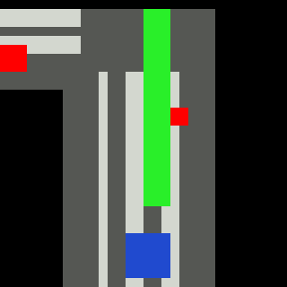
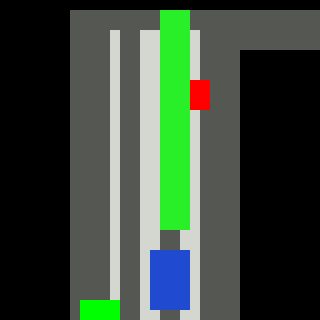
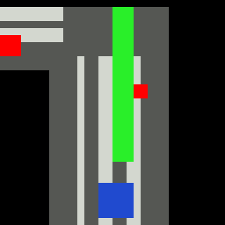
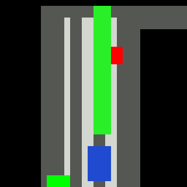

BeV Speed End-to-end Reinforcement Learning¶
This is a simple Reinforcement Learning demo to show the basic usage of DI-drive environments and DI-engine RL policies. All training, evaluation and testing entry can be found in demo/simple_rl
 



{kind=link}
{kind=link}

Inputs, NN models and Policies¶
The simple RL policy takes a Bird-eye View(BeV) image with size of 32x32x5 and speed scalar as observations. The BeV image consists of roads, lanes, vehicles, pedestrians and target route. Each occupies a channel with 0-1 value. The traffic light information is excluded from observations.
The BeV image is encoded by a Conv net to get a 256 size embedding, and concat with the speed value repeated 256 times. The encoder output is then send into different heads depends on the required outputs of RL policies.
Please refer to the definition of encoder in core/models/bev_speed_model.py and RL models in
demo/simple_rl/model.py for their details. If you want to build your own RL experiments, you can
define NN models similarly.
Currently we have DQN, DDPG, TD3, SAC and PPO demos. We provide training and evaluation entry for all of them. All these policies are implemented from DI-engine standard policy zoo. You can refer to DI-engine’s document to get how to modify the training hyper-parameters in config.
Environment¶
The simple RL experiments use the environment instance SimpleCarlaEnv which is well defined with
specified inputs and outputs. The standard usage to customize the env interfaces is to add EnvWrapper
and change the input, output, reward of Env. For example:
class DiscreteEnvWrapper(gym.Wrapper):
self._acc_list = [(0, 1), (0.25, 0), (0.75, 0),]
self._steer_list = [-0.8, -0.5, -0.2, 0, 0.2, 0.5, 0.8]
def reset(self, *args, **kwargs) -> Any:
obs = super().reset(*args, **kwargs)
obs_out = {
'birdview': obs['birdview'][..., [0, 1, 5, 6, 8]],
'speed': (obs['speed'] / 25).astype(np.float32),
}
return obs_out
def step(self, id):
if isinstance(id, torch.Tensor):
id = id.item()
id = np.squeeze(id)
assert id < len(self._acc_list) * len(self._steer_list), (id, len(self._acc_list) * len(self._steer_list))
mod_value = len(self._acc_list)
acc = self._acc_list[id % mod_value]
steer = self._steer_list[id // mod_value]
action = {
'steer': steer,
'throttle': acc[0],
'brake': acc[1],
}
obs, reward, done, info = super().step(action)
obs_out = {
'birdview': obs['birdview'][..., [0, 1, 5, 6, 8]],
'speed': (obs['speed'] / 25).astype(np.float32),
}
return obs_out, reward, done, info
This will map the discrete action space to continuous control signal in Carla env and delete traffic signal channels in BeV image. Other wrappers work in the same way.
We have tried amounts of reward shaping and add varies kinds of reward function in the Env. By default only [‘goal’, ‘distance’, ‘speed’, ‘angle’, ‘failure’] 5 types of reward is taken into account. You can modify the reward types you want to use via config.
Training and Evaluation¶
The entry files of all the RL methods are written in standard distributed way using DI-engine to run RL experiments.
The sub-process env manager in Di-engine is used to run multi-env in parallel.
Off-policy methods use collector, learner, replay buffer in DI-engine and evaluator in DI-drive.
On-policy method does not use replay buffer.
We follow the standard deployment of the Distributed feature in
DI-engine. Details can be referred in Distributed.
All training pipeline is divided into different procedures and are combined by a Task object.
Information between different middleware are communicated by a ctx dict. On-policy and Off-policy
method has different collect procedure, with others remain.
Training loop:
with Task(async_mode=args.use_async) as task:
task.use_step_wrapper(StepTimer(print_per_step=1))
task.use(evaluate(task, evaluator, learner))
if replay_buffer is None:
task.use(on_policy_collect(collector))
else:
task.use(off_policy_collect(epsilon_greedy, collector, replay_buffer, cfg))
task.use(train(learner, replay_buffer, cfg))
task.run(max_step=int(1e8))
On-policy collection:
def on_policy_collect(collector):
def _collect(ctx):
ctx.setdefault("train_iter", -1)
new_data = collector.collect(train_iter=ctx.train_iter)
unpack_birdview(new_data)
ctx.new_data = new_data
ctx.envstep = collector.envstep
return _collect
Off-policy collection:
def off_policy_collect(epsilon_greedy, collector, replay_buffer, cfg):
def _collect(ctx):
ctx.setdefault("train_iter", -1)
if epsilon_greedy is not None:
eps = epsilon_greedy(collector.envstep)
new_data = collector.collect(train_iter=ctx.train_iter, policy_kwargs={'eps': eps})
else:
new_data = collector.collect(train_iter=ctx.train_iter)
ctx.update_per_collect = len(new_data) // cfg.policy.learn.batch_size * 4
replay_buffer.push(new_data, cur_collector_envstep=collector.envstep)
ctx.envstep = collector.envstep
return _collect
Other procedures:
def evaluate(task, evaluator, learner):
def _evaluate(ctx):
ctx.setdefault("envstep", -1) # Avoid attribute not existing
if evaluator.should_eval(learner.train_iter):
stop, rate = evaluator.eval(learner.save_checkpoint, learner.train_iter, ctx.envstep)
if stop:
task.finish = True
return
return _evaluate
def train(learner, replay_buffer, cfg):
def _train(ctx):
ctx.setdefault("envstep", -1)
if 'new_data' in ctx:
learner.train(ctx.new_data, ctx.envstep)
else:
if 'update_per_collect' in ctx:
update_per_collect = ctx.update_per_collect
else:
update_per_collect = cfg.policy.learn.update_per_collect
for i in range(update_per_collect):
train_data = replay_buffer.sample(cfg.policy.learn.batch_size, learner.train_iter)
if train_data is not None:
train_data = copy.deepcopy(train_data)
unpack_birdview(train_data)
learner.train(train_data, ctx.envstep)
if cfg.policy.get('priority', False):
replay_buffer.update(learner.priority_info)
ctx.train_iter = learner.train_iter
return _train
The are two kinds of evaluation provided in this demo, Carla benchmark
evaluation and close-loop driving test. The former one is to evaluate the general performance
of a policy in a benchmark suite, the latter one is mostly used to visualize driving results in a route.
They can be implement using CarlaBenchmarkEvaluator and SerialEvaluator separately.
For more details, it is recommended to check the API doc for the modules above.
We provide pre-train weights of DQN policy that can be evaluated and visualized directly as well as a performance reference of your training. link